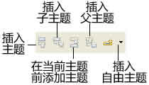
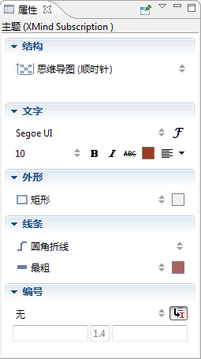

主题的类型
XMIND有五种不同类型的主题，如下：

中心主题： 每一张思维图有且仅有一个中心主题。这个主题在新建图的时候会被自动创建并安排在图的中心的位置。 当保存这个新建图的时候，中心主题的内容会默认设置为保存文件的名字。
分支主题： 中心主题周围发散出来的第一层主题即分支主题。分支主题被用来记录与中心主题息息相关的信息。
子主题： 分支主题，自由主题后面添加的主题都被称为子主题， 子主题可以有自己的子主题。
自由主题： 通常中心思想之外总会有些关键的，但是临时缺少合适位置的信息。这些信息都将以自由主题的形式存在于思维图之中，甚至可以使用自由主题开始另外一个同中心主题并行的分支。XMIND中，自由主题也有两种不同的形式--自由中心主题和自由分支主题，便于用户根据需要选用。
添加主题
您可以通过下列方式添加主题：
- 在菜单栏选择“插入”，然后选择：
- “主题” 来添加分支主题或者与当前主题同级的主题。
- “子主题” 来添加当前主题的子主题。
- “主题（之前）”添加一个与当前主题同级但位置在其之前的主题。
- “父主题”来为当前主题添加一个父主题。
- “自由中心主题”来创建一个与中心主题具有相同属性的自由主题。
- “自由分支主题”来创建一个与分支主题具有相同属性的自由主题。
- 点击工具栏添加相对应的主题：
 - 使用快捷键的方式：
- Enter： 添加当前主题的同级主题。
- Tab/Insert： 添加当前主题的子主题。
- Shift +Enter： 添加一个与当前主题同级但位置在其之前的主题。
- Ctrl +Enter： 添加一个当前主题的父主题。
- 利用鼠标：
- 选中一个主题然后打开右键菜单： 选择“主题”创建同级主题，或者“子主题”添加当前主题的子主题。
- 双击图的空白处： 添加自由分支主题。
注意： 添加主题之前必须选中一个主题。
编辑主题
您可以通过以下方法编辑以及删除主题：
- 选中主题。
- 您有四种方法来开始编辑主题：
- 在菜单栏选择“编辑 > 编辑文字”。
- 双击主题。
- 点击“F2”。
- 点击“空格键”。
- 您有2种方法来删除选中的主题：
- 在菜单选择“编辑 > 删除”。
- 在工具栏点击删除。
修改主题属性
- 选中主题。
- 打开 属性视图。
- 您可以在此视图中修改如下属性：
- 结构： 在下拉列表中选择合适的结构。所选结构会应用于当前主题及其子主题。
- 文字： 这里可以调整所选主题的文字的 “字体”， “大小”， “类型” 以及 “文字颜色”。
- 形状： 为当前主题选择合适的形状，以及背景色。
- 线条： 为当前主题同其子主题之间的线条选择合适的形状，宽度以及颜色。
- 编号：
- 选择编号的类型。
- 选择是否继承当前主题父主题的编号。
- 选择在编号前或后添加文字或其它，添加的内容与编号之间会用“，”隔开。

主题的自由定位
XMIND默认的主题排列顺序是自上而下，从左往右。 通过下列方式您可以自己摆放主题的位置：
- 选中主题。
- 移动主题的同时，配合下列操作：
- 按住Ctrl（Mac上使用 Alt）： 在新位置复制所选主题。
- 按住Alt(Command on Mac)： 移动所选主题至任意位置，但不改变其他任何属性。
- 按住Shift： 移动所选主题至任何位置成为自由主题。
您可能还对下列内容感兴趣：